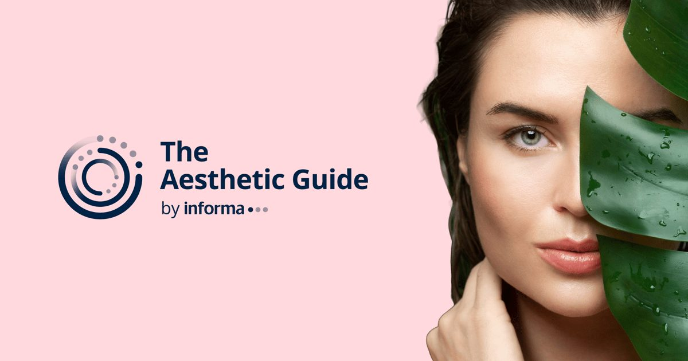

Крупные сделки и кадровые сдвиги в эстетике: что меняется на рынке
Компания Galderma объявила о приобретении бренда ZO Skin Health, а Evolus расширяет портфель за счет инъекционной программы для восстановления волос. Параллельно в ACG Practice Partners перешла известная консультант Джуди Козлицки. Эти события показывают, как ключевые игроки перераспределяют ресурсы между профессиональным уходом, инъекционными инновациями и управлением клиниками.
Galderma и ZO Skin Health: консолидация рынка врачебного ухода
Сделка по приобретению ZO Skin Health компанией Galderma наглядно иллюстрирует тренд на консолидацию сегмента профессионального ухода, рекомендуемого врачами. Бренд ЗО построил репутацию на высоких концентрациях активов и протоколах, требующих курирования специалиста, что идеально дополняет портфель инъекционных препаратов нового владельца. Для рынка это значит дальнейшее стирание границ между аптечной косметикой, профессиональными линиями и процедурной терапией.
Врачи получают доступ к более интегрированным решениям, где подбор домашнего ухода алгоритмически связывается с планом инъекционных и аппаратных процедур. Тем не менее клиническое мышление не должно подменяться маркетинговыми пакетами: составы, фармакокинетика и доказательная база конкретных средств остаются главными критериями выбора. Конкуренция между крупными холдингами стимулирует прозрачность протоколов и качество обучающих программ.
Пациентам такая вертикальная интеграция может предложить более понятные и последовательные схемы лечения кожи, исключающие конфликт ингредиентов и процедур. Однако ответственность за безопасность смещается на квалификацию конкретного практика, который должен уметь адаптировать корпоративный протокол под индивидуальные особенности кожи, а не применять его формально. Критический анализ предложений остается ключевым навыком.

Evolus и инъекционная трихология: новый вектор развития
Объявление Evolus о запуске инъекционной программы для восстановления волос сигнализирует о входе крупного игрока инъекционного рынка в трихологию. До этого компания ассоциировалась преимущественно с токсином ботулинум для эстетических показаний, а теперь демонстрирует амбиции расширить терапевтический профиль. Такой шаг логичен: механизмы действия инъекционных препаратов в области головы опираются на те же принципы модуляции микроциркуляции и воспалительных каскадов.
Для клиник появление еще одного претендента на нишу инъекционной трихологии означает расширение выбор протоколов и ценовых сегментов. Врачам придется сравнивать новые схемы с уже устоявшимися подходами — плазмотерапией, мезотерапией, микроножевыми доставками факторов роста. Ключевым останется качество преклинических и клинических данных, подтверждающих безопасность и воспроизводимость результата на длинных наблюдениях.
Пациенты получают альтернативу, но также сталкиваются с необходимостью разбираться в нюансах механизма действия, схем введения и контрпоказаниях, специфичных для кожной головы. Отсутствие унифицированных рекомендаций делает консультацию у трихолога или дерматолога обязательным этапом перед началом любого курса. Маркетинговые обещания не заменяют индивидуальный план наблюдения.

Кадровые решения как индикатор стратегии
Переход Джуди Козлицки в ACG Practice Partners на должность вице-президента по консалтингу подчеркивает растущий спрос на операционную экспертизу в эстетическом бизнесе. Её опыт работы с ключевыми мнениями лидерами и запуска продуктов дает понимание того, как клинические протоколы переводится в экономику практики. Такие назначения говорят о том, что управление клиникой воспринимается как отдельная дисциплина, требующая системного подхода.
Консалтинговые структуры вроде ACG фокусируются на оптимизации пациентских путей, обучении персонажа и внедрении цифровых стандартов качества. Для врачей-владельцев это возможность получить внешний аудит процессов без потери клинической автономии. Рынок зреет: хаотичное расширение услуг сменяется построением масштабируемых и воспроизводимых бизнес-моделей.
Специалистам среднего звена — косметологам, медсестрам, администраторам — такие изменения обещают более четкие регламенты работы и пути карьерного роста внутри организаций. Профессионализация управления снижает риски выгорания и ошибок, связанных с несовпадением клинических и коммерческих целей. В долгосрочной перспективе выигрывает качество сервиса для пациента.
Что это значит для доказательной практики
Три описанных события — сделка года, запуск инновационной программы, ключевое кадровое назначение — вместе рисуют картину отрасли, переходящей от точечных продуктов к экосистемам. Компании стремятся контролировать весь путь: от разработки действующего вещества и космецевтики до обучения врача и управления клиникой. Такой подход повышает предсказуемость результатов, но требует от практиков навыков критической оценки корпоративных стандартов.
Независимая экспертиза протоколов, понимание фармакологии компонентов и умение строить индивидуальные схемы остаются главными компетенциями специалиста. Никакая интеграция не отменяет необходимость информированного согласия, документирования динамики и соблюдения принципов безопасности. Рынок предложит больше готовых решений — задача врача выбирать и адаптировать, а не слепо внедрять.
Пациентам выгодно от роста конкуренции: появляется больше точек входа в качественную эстетическую медицину, прозрачнее становится структура цены и этапов лечения. Однако ответственность за выбор клиники и врача не исчезает. Понимание разницы между маркетинговым пакетом и доказательным протоколом становится навыком базовой грамотности в уходе за собой.
Вопросы, которые стоит задать специалисту на консультации
При обсуждении комплексных программ уточните, какие именно активы и в каких концентрациях входят в рекомендуемый домашний уход, и как они взаимодействуют с плановыми инъекционными или аппаратными процедурами. Попросите объяснить механизм действия нового инъекционного препарата для волос: через какие рецепторы или сигнальные пути он реализует эффект, и есть ли опубликованные данные по безопасности на коже головы.
Спросите, как клиника оценивает качество результата в динамике: используются ли стандартизированные фотофиксации, шкалы оценки, инструментальные методы (дерматоскопия, трихоскопия). Узнайте, есть ли у практика опыт работы с разными брендами в одной индикации и как он выбирает между ними. Ответы покажут глубину клинического мышления лучше любой презентации.
Коротко: Рынок эстетической медицины консолидируется: крупные холдинги объединяют инъекции, космецевтику и управление практиками. Врачам важно сохранять клиническую автономию при выборе протоколов, а пациентам — понимать разницу между маркетинговым пакетом и доказательным подходом.
Как вы оцениваете влияние крупных корпоративных сделок на качество и доступность эстетических услуг в вашем регионе?